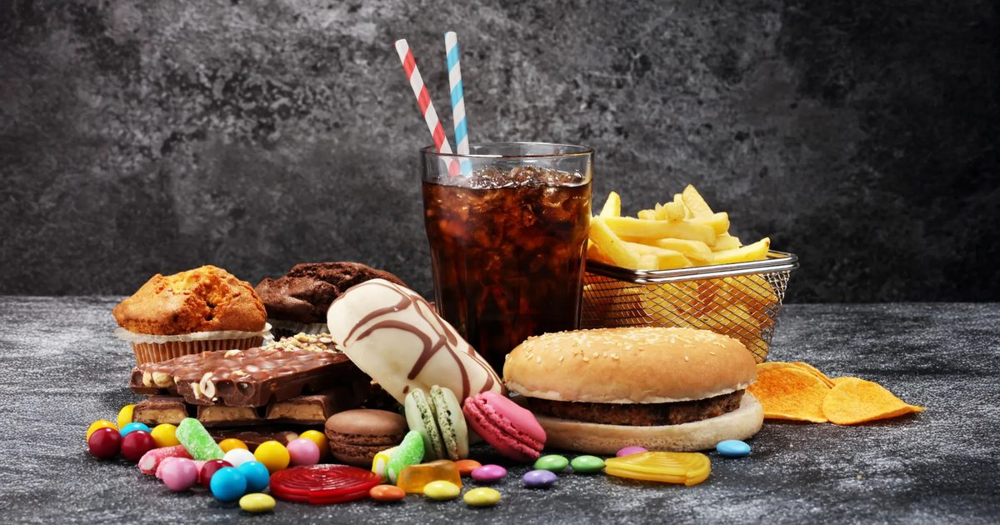

Может ли отказ от ультра-обработанной пищи улучшить ваше психическое здоровье?
Люди с депрессией, которые резко сократили ультра-обработанные продукты, испытали заметное улучшение своих симптомов в небольшом предварительном исследовании.
Исследователи подозревают, что более здоровое питание может принести пользу мозгу отчасти за счет уменьшения повреждения кишечника и хронического воспаления.